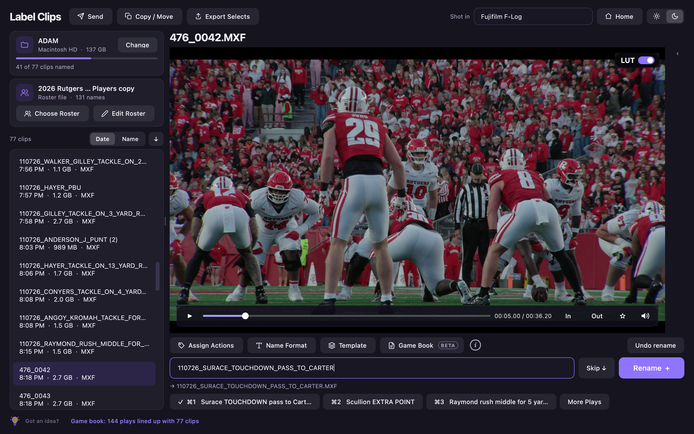
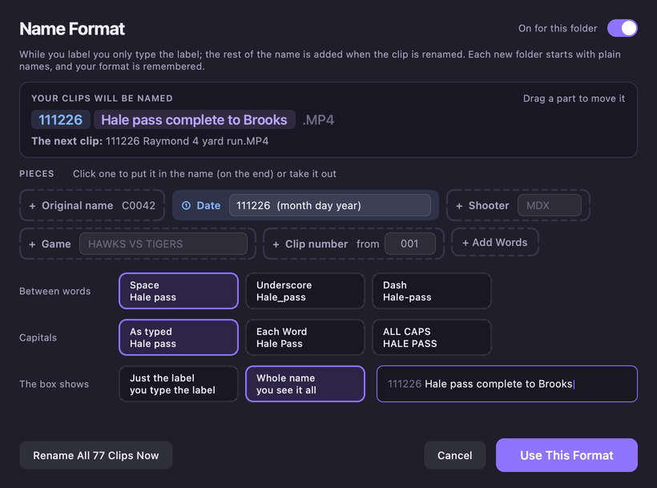

Label sports video clips by player
Rename every clip with the players and the play while you watch it. MXF, MOV and MP4, including LOG footage.

Game footage comes off the camera as C0001.MP4, C0002.MP4… and someone has to watch each one and name it before editors can find anything. Label Clips in Metadata Express turns that into typing: watch the clip, type 23 and Enter for Hale, type pc and a space for “pass complete to”, then + to rename it and play the next one.
How labeling works
- Open a folder of clips. They play straight away with smooth scrubbing; LOG footage (Sony S-Log3, Panasonic V-Log and more) shows in normal color with the LUT switch on.
- Type the label as you watch. A jersey number and Enter puts in the player from your roster; your own action shortcuts (Assign Actions) turn a few letters into the words you use.
- Rename and move on.
+renames the clip and goes to the next;⌘Srenames and stays. Undo is one click. - Mark your selects. Set In and Out points or star the best clips, then export them as a timeline for Premiere Pro, Final Cut Pro or DaVinci Resolve.
Your office's naming, automatically
Most video teams have a naming convention. Name Format puts it on every clip for you: keep the camera's original name, add the date it was recorded, your initials, the game and a clip number, with underscores, hyphens or spaces between words:
C0001_031426_JS_HAWKS_VS_TIGERS_094_Hale_Pass_Complete.MP4Click the pieces in the order you want them in the name, and drag them along the name to move them. Choose spaces, underscores or dashes between words, and capitals as typed, Each Word or ALL CAPS. Rename All applies it to a whole folder at once, and one Undo puts everything back.

Name clips from the game book (beta)
Add the game's play-by-play PDF with Game Book, and every clip gets its likeliest plays right under the name box. Press ⌘1, ⌘2 or ⌘3 (Ctrl on Windows) to put one in; each pick lines up the clips after it.
031426_HALE_PASS_COMPLETE_TO_BROOKS_FOR_18_YARDS.MP4Label Style words each kind of play your way once, and every play of that kind follows. The other team's name changes with each game, and a template shares your style with your whole team. Game Book reads football game books in the NCAA LiveStats layout (pages titled “Play By Play report”); more layouts and sports are coming.
Made for sports video
- Plays MXF, MOV and MP4: XAVC, ProRes, DNxHD/HR, H.264 and HEVC, up to 4K.
- Clips loop while you decide, with frame-by-frame stepping and faster playback.
- Shows each clip's details: recorded time, timecode, codec, frame rate and audio tracks.
- Clips on a camera card are protected; import them first, then label them.
Questions
Which cameras and formats does it play?
MXF, MOV and MP4 from cameras like Sony FX and Alpha, Canon and Panasonic, including XAVC, ProRes, DNx, H.264 and HEVC. LOG footage shows in normal color with the LUT switch on.
Will Premiere Pro see my In and Out points?
Yes. Export Selects makes a timeline with your starred and In/Out clips, already trimmed and named, that opens in Premiere Pro, Final Cut Pro or DaVinci Resolve.
Can I keep the camera's original file name?
Yes. Name Format can start every name with the original file name, then the date, your initials, the game and a clip number, before the label you type.
What does Game Book need?
The game's play-by-play PDF for football, in the NCAA LiveStats layout (pages titled “Play By Play report”), and your clips with the recording times the camera gave them. It lines up the clips with the plays by when they were shot.
Is it on Windows?
Yes, Metadata Express runs on Mac and Windows.
Try it free
Metadata Express runs on Mac and Windows. Every feature is free for 14 days, no card needed. Download it here. Questions? Send us a message.
More guides: Sports photo captioning · Label video clips by player · Name clips from the play-by-play · Rename photos with player names · Tag by jersey number · IPTC metadata explained